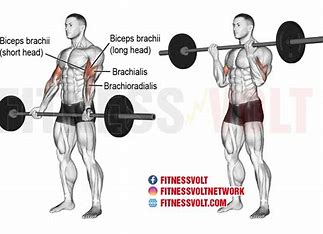
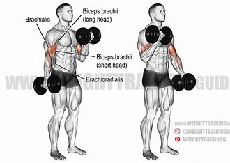
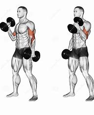
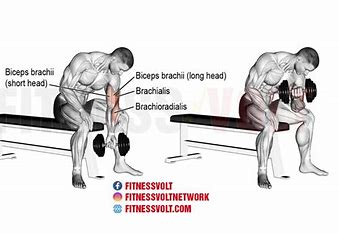
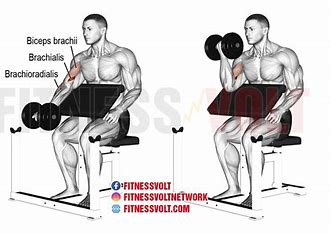
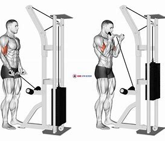
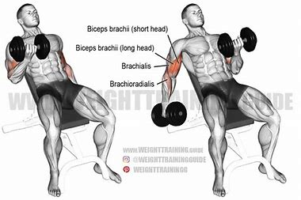

7 Biceps Workouts
1. Barbell Curl

Stand up straight with a barbell in your hands.
Your palms should face forward and elbows close to your torso.
Curl the barbell while contracting your biceps until your forearms are vertical.
Lower the barbell back to the starting position.
2. Dumbbell Curl

Stand with a dumbbell in each hand. Your palms should face your torso.
Curl the weights while turning your palms to face upward during the lift.
Squeeze your biceps at the top and slowly lower back down.
3. Hammer Curl

Stand with a dumbbell in each hand, palms facing your torso.
Keep your elbows close to your torso.
Curl the weights while keeping your palms facing each other.
Lower back to the starting position.
4. Concentration Curl

Sit on a bench with your legs spread, holding a dumbbell in one hand.
Rest your elbow on the inside of your thigh.
Curl the dumbbell while contracting your biceps.
Lower it back after a brief pause at the top.
5. Preacher Curl

Use a preacher bench and a barbell or dumbbell.
Rest your upper arms on the bench pad.
Curl the weight while keeping your upper arms stationary.
Lower it back to the starting position.
6. Cable Curl

Attach a straight bar to the low pulley of a cable station.
Stand straight with your torso upright. Grab the bar with an underhand grip.
Curl the bar while keeping your elbows stationary.
Lower back to the starting position.
7. Incline Dumbbell Curl

Lie back on an incline bench with a dumbbell in each hand.
Keep your arms extended and palms facing forward.
Curl the weights while keeping your upper arms stationary.
Lower the weights back to the starting position.
Go Back